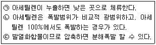
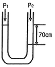

가스산업기사 (2017-05-07 기출문제)
1과목: 연소공학
1. 압력이 0.1MPa, 체적이 3m3인 273.15K의 공기가 이상적으로 단열압축되어 그 체적이 1/3으로 되었다. 엔탈피의 변화량은 약 몇 kJ인가? (단, 공기의 기체상수는 0.287kJ/kg·K, 비열비는 1.4이다.)
- 480
- 580
- 680
- 780
(정답률: 57%)

2. 다음 연소와 관련된 식으로 옳은 것은?
- 과잉공기비 = 공기비(m) - 1
- 과잉공기량 = 이론공기량(A0)＋1
- 실제공기량 = 공기비(m)＋이론공기량(A0)
- 공기비 = (이론산소량 / 실제공기량) - 이론공기량
(정답률: 83%)
3. 다음 중 폭굉(detonation)의 화염전파속도는?
- 0.1~10m/s
- 10~100m/s
- 1000~3500m/s
- 5000~10000m/s
(정답률: 90%)
4. 다음 중 착화온도가 낮아지는 이유가 되지 않는 것은?
- 반응활성도가 클수록
- 발열량이 클수록
- 산소농도가 높을수록
- 분자구조가 단순할수록
(정답률: 77%)
5. 단원자 분자의 정적비열(CV)에 대한 정압비열(CP)의 비인 비열비(k)의 값은?
- 1.67
- 1.44
- 1.33
- 1.02
(정답률: 67%)
6. 증기운 폭발에 영향을 주는 인자로서 가장 거리가 먼 것은?
- 방출된 물질의 양
- 증발된 물질의 분율
- 점화원의 위치
- 혼합비
(정답률: 74%)
7. 시안화수소는 장기간 저장하지 못하도록 규정되어 있다. 가장 큰 이유는?
- 폭발하기 때문에
- 산화폭발하기 때문에
- 분진폭발하기 때문에
- 중합폭발하기 때문에
(정답률: 93%)
8. 다음 중 물리적 폭발에 속하는 것은?
- 가스폭발
- 폭발적 증발
- 디토네이션
- 중합폭발
(정답률: 63%)
9. 유동층 연소의 장점에 대한 설명으로 가장 거리가 먼 것은?
- 부하변동에 따른 적응력이 좋다.
- 광범위하게 연료에 적용할 수 있다.
- 질소산화물의 발생량이 감소된다.
- 전열면적이 적게 소요된다.
(정답률: 46%)
10. 0.5atm, 10L의 기체 A와 1.0atm, 5L의 기체 B를 전체부피 15L의 용기에 넣을 경우, 전압은 얼마인가? (단, 온도는 항상 일정하다.)
- 1/3atm
- 2/3atm
- 1.5atm
- 1atm
(정답률: 83%)
11. 다음 가연성 가스 중 폭발하한 값이 가장 낮은 것은?
- 메탄
- 부탄
- 수소
- 아세틸렌
(정답률: 78%)
12. 피크노미터는 무엇을 측정하는데 사용되는가?
- 비중
- 비열
- 발화점
- 열량
(정답률: 70%)
13. 피스톤과 실린더로 구성된 어떤 용기 내에 들어있는 기체의 처음 체적은 0.1m3이다. 200kPa의 일정한 압력으로 체적이 0.3m3으로 변했을 때의 일은 약 몇 kJ인가?
- 0.4
- 4
- 40
- 400
(정답률: 68%)
14. 미연소혼합기의 흐름이 화염부근에서 층류에서 난류로 바뀌었을 때의 현상으로 옳지 않은 것은?
- 확산연소일 경우는 단위면적당 연소율이 높아진다.
- 적화식연소는 난류 확산연소로서 연소율이 높다.
- 화염의 성질이 크게 바뀌며 화염대의 두께가 증대한 다.
- 예혼합연소일 경우 화염전파속도가 가속된다.
(정답률: 64%)
15. 어떤 반응물질에 반응을 시작하기 전에 반드시 흡수하여야 하는 에너지의 양을 무엇이라 하는가?
- 점화에너지
- 활성화에너지
- 형성엔탈피
- 연소에너지
(정답률: 91%)
16. 압력 2atm, 온도 27℃에서 공기 2kg의 부피는 약 몇 m3인가? (단, 공기의 평균분자량은 29이다.)
- 0.45
- 0.65
- 0.75
- 0.85
(정답률: 55%)
17. 정상동작 상태에서 주변의 폭발성가스 또는 증기에 점화시키지 않고 점화시킬 수 있는 고장이 유발되지 않도록 한 방폭구조는?
- 특수방폭구조
- 비점화방폭구조
- 본질안전방폭구조
- 몰드방폭구조
(정답률: 83%)
18. 고부하 연소 중 내연기관의 동작과 같은 흡입, 연소, 팽창, 배기를 반복하면서 연소를 일으키는 것은? (단, 물의 밀도는 1000kg/m3이다.)
- 펄스연소
- 에멀전연소
- 촉매연소
- 고농도산소연소
(정답률: 79%)
19. 연소에서 사용되는 용어와 그 내용에 대하여 가장 바르게 연결된 것은?
- 폭발 - 정상연소
- 착화점 - 점화 시 최대에너지
- 연소범위 - 위험도의 계산 기준
- 자연발화 - 불씨에 의한 최고 연소시작 온도
(정답률: 86%)
20. 버너 출구에서 가연성 기체의 유출 속도가 연소속도보다 큰 경우 불꽃이 노즐에 정착되지 않고 꺼져버리는 현상을 무엇이라 하는가?
- boil over
- flash back
- blow off
- back fire
(정답률: 90%)
2과목: 가스설비
21. 용기 충전구에 "V" 홈의 의미는?
- 왼나사를 나타낸다.
- 독성가스를 나타낸다.
- 가연성가스를 나타낸다.
- 위험한 가스를 나타낸다.
(정답률: 87%)
22. LP가스를 이용한 도시가스 공급방식이 아닌 것은?
- 직접 혼입방식
- 공기 혼합방식
- 변성 혼입방식
- 생가스 혼합방식
(정답률: 80%)
23. 고압가스 설비 설치 시 지반이 단단한 점토질 지반일 때의 허용지지력도는?
- 0.⑤MPa
- 0.1MPa
- 0.2MPa
- 0.3MPa
(정답률: 61%)
24. 가스온수기에 반드시 부착하지 않아도 되는 안전장치는?
- 정전안전장치
- 역풍방지장치
- 전도안전장치
- 소화안전장치
(정답률: 67%)
25. 폴리에틸렌관(polyethylene pipe)의 일반적인 성질에 대한 설명으로 틀린 것은?
- 인장강도가 적다.
- 내열성과 보온성이 나쁘다.
- 염화비닐관에 비해 가볍다.
- 상온에도 유연성이 풍부하다.
(정답률: 71%)
26. 실린더의 단면적 50cm2, 피스톤 행정 10㎝, 회전수 200rpm, 체적효율 80%인 왕복압축기의 토출량은 약 몇 L/min인가?
- 60
- 80
- 100
- 120
(정답률: 64%)
27. 철을 담금질하면 경도는 커지지만 탄성이 약해지기 쉬우므로 이를 적당한 온도로 재가열 했다가 공기 중에서 서냉시키는 열처리 방법은?
- 담금질(quenching)
- 뜨임(tempering)
- 불림(normalizing)
- 풀림(annealing)
(정답률: 57%)
28. 금속의 시험편 또는 제품의 표면에 일정한 하중으로 일정모양의 경질 압자를 압입하든가 또는 일정한 높이에서 해머를 낙하시키는 등의 방법으로 금속재료를 시험하는 방법은?
- 인장시험
- 굽힘시험
- 경도시험
- 크리프시험
(정답률: 69%)
29. 전기방식 방법의 특징에 대한 설명으로 옳은 것은?
- 전위차가 일정하고 방식 전류가 작아 도복장의 저항이 작은 대상에 알맞은 희생양극법이다.
- 매설배관과 변전소의 부극 또는 레일을 직접 도선으로 연결해야하는 경우에 사용하는 방식은 선택배류법이다.
- 외부전원법과 선택배류법을 조합하여 레일의 전위가 높아도 방식전류를 흐르게 할 수가 있는 방식은 강제 배류법이다.
- 전압을 임의적으로 선정할 수 있고 전류의 방출을 많이 할 수 있어 전류구배가 작은 장소에 사용하는 방식은 외부전원법이다.
(정답률: 69%)
30. 고압가스용기 및 장치 가공 후 열처리를 실시하는 가장 큰 이유는?
- 재료표면의 경도를 높이기 위하여
- 재료의 표면을 연화시켜 가공하기 쉽도록 하기 위하여
- 가공 중 나타난 잔류응력을 제거하기 위하여
- 부동태 피막을 형성시켜 내산성을 증가시키기 위하여
(정답률: 74%)
31. 원유, 중유, 나프타 등의 분자량이 큰 탄화수소 원료를 고온(800~900℃)으로 분해하여 고열량의 가스를 제조 하는 방법은?
- 열분해 프로세스
- 접촉분해 프로세스
- 수소화분해 프로세스
- 대체 천연가스 프로세스
(정답률: 84%)
32. 고압가스용 기화장치의 기화통의 용접하는 부분에 사용할 수 없는 재료의 기준은?
- 탄소함유량이 0.⑤% 이상인 강재 또는 저합금 강재
- 탄소함유량이 0.10% 이상인 강재 또는 저합금 강재
- 탄소함유량이 0.15% 이상인 강재 또는 저합금 강재
- 탄소함유량이 0.35% 이상인 강재 또는 저합금 강재
(정답률: 73%)
33. 내용적 70L의 LPG 용기에 프로판 가스를 충전할 수 있는 최대량은 몇 kg인가?
- 50
- 45
- 40
- 30
(정답률: 62%)
34. 물을 전양정 20m, 송출량 500L/min로 이송할 경우 원심펌프의 필요동력은 약 몇 kW인가? (단, 펌프의 효율은 60%이다.)
- 1.7
- 2.7
- 3.7
- 4.7
(정답률: 61%)
35. 펌프에서 발생하는 캐비테이션의 방지법 중 옳은 것은?
- 펌프의 위치를 낮게 한다.
- 유효흡입수두를 작게 한다.
- 펌프의 회전수를 크게 한다.
- 흡입관의 지름을 작게 한다.
(정답률: 66%)
36. 저온장치용 금속재료에서 온도가 낮을수록 감소하는 기계적 성질은?
- 인장강도
- 연신율
- 항복점
- 경도
(정답률: 74%)
37. LP가스용 조정기 중 2단 감압식조정기의 특징에 대한 설명으로 틀린 것은?
- 1차용 조정기의 조정압력은 25kPa이다.
- 배관이 길어도 전 공급지역의 압력을 균일하게 유지할 수 있다.
- 입상배관에 의한 압력손실을 적게 할 수 있다.
- 배관구경이 작은 것으로 설계할 수 있다.
(정답률: 66%)
38. 펌프에서 발생하는 수격현상의 방지법으로 틀린 것은?
- 서지(surge) 탱크를 관내에 설치한다.
- 관내의 유속 흐름 속도를 가능한 적게 한다.
- 플라이휠을 설치하여 펌프의 속도가 급변하는 것을 막는다.
- 밸브는 펌프 주입구에 설치하고 밸브를 적당히 제어 한다.
(정답률: 66%)
39. 내압시험압력 및 기밀시험압력의 기준이 되는 압력으로서 사용 상태에서 해당설비 등의 각부에 작용하는 최고사용압력을 의미하는 것은?
- 설계압력
- 표준압력
- 상용압력
- 설정압력
(정답률: 82%)
40. 레이놀즈(Reynolds)식 정압기의 특징인 것은?
- 로딩형이다.
- 콤팩트하다.
- 정특성, 동특성이 양호하다.
- 정특성은 극히 좋으나 안정성이 부족하다.
(정답률: 73%)
3과목: 가스안전관리
41. 냉동용 특정설비 제조시설에서 냉동기 냉매설비에 대하여 실시하는 기밀시험 압력의 기준을 적합한 것은?
- 설계압력 이상의 압력
- 사용압력 이상의 압력
- 설계압력의 1.5배 이상의 압력
- 사용압력의 1.5배 이상의 압력
(정답률: 48%)
42. 아세틸렌에 대한 설명이 옳은 것으로만 나열된 것은?

- ㉠
- ㉡
- ㉡, ㉢
- ㉠, ㉡, ㉢
(정답률: 53%)
43. 밀폐식 보일러에서 사고원인이 되는 사항에 대한 설명으로 가장 거리가 먼 것은?
- 전용보일러실에 보일러를 설치하지 아니한 경우
- 설치 후 이음부에 대한 가스누출 여부를 확인하지 아니한 경우
- 배기통이 수평보다 위쪽을 향하도록 설치한 경우
- 배기통과 건물의 외벽사이에 기밀이 완전히 유지되지 않는 경우
(정답률: 74%)
44. 용기보관 장소에 대한 설명 중 옳지 않은 것은?
- 산소 충전용기 보관실의 지붕은 콘크리트로 견고히 한다.
- 독성가스 용기보관실에는 가스누출검지 경보장치를 설치한다.
- 공기보다 무거운 가연성가스의 용기보관실에는 가스 누출검지경보장치를 설치한다.
- 용기보관 장소의 경계표지는 출입구 등 외부로부터 보기 쉬운 곳에 게시한다.
(정답률: 88%)
45. 다음 가스의 치환방법으로 가장 적당한 것은?
- 아황산가스는 공기로 치환할 필요 없이 작업한다.
- 염소는 제해시키고 허용농도 이하가 될 때까지 불활 성가스로 치환한 후 작업한다.
- 수소는 불활성가스로 치환한 즉시 작업한다.
- 산소는 치환할 필요도 없이 작업한다.
(정답률: 80%)
46. 산소, 아세틸렌 및 수소를 제조하는 자가 실시하여야 하는 품질검사의 주기는?
- 1일 1회 이상
- 1주 1회 이상
- 월 1회 이상
- 년 2회 이상
(정답률: 83%)
47. 내용적이 50L인 용기에 프로판가스를 충전하는 때에는 얼마의 충전량(kg)을 초과할 수 없는가? (단, 충전상수 C는 프로판의 경우 2.35이다.)
- 20
- 20.4
- 21.3
- 24.4
(정답률: 81%)
48. 액화석유가스 제조시설 저장탱크의 폭발방지장치로 사용되는 금속은?
- 아연
- 알루미늄
- 철
- 구리
(정답률: 73%)
49. 운반책임자를 동승시켜 운반해야 되는 경우에 해당되지 않는 것은?
- 압축산소 : 100m3 이상
- 독성압축가스 : 100m3 이상
- 액화산소 : 6000kg 이상
- 독성액화가스 : 1000kg 이상
(정답률: 71%)
50. 염소의 성질에 대한 설명으로 틀린 것은?
- 화학적으로 활성이 강한 산화제이다.
- 녹황색의 자극적인 냄새가 나는 기체이다.
- 습기가 있으면 철 등을 부식시키므로 수분과 격리시켜야 한다.
- 염소와 수소를 혼합하면 냉암소에서도 폭발하여 염화수소가 된다.
(정답률: 69%)
51. 다음 각 고압가스를 용기에 충전할 때의 기준으로 틀린 것은?
- 아세틸렌은 수산화나트륨 또는 디메틸포름아미드를 침윤시킨 수 충전한다.
- 아세틸렌을 용기에 충전한 후에는 15℃에서 1.5MPa 이하로 될 때까지 정치하여 둔다.
- 시안화수소는 아황산가스 등의 안정제를 첨가하여 충전한다.
- 시안화수소는 충전 후 24시간 정치한다.
(정답률: 59%)
52. 이동식 부탄연소기용 용접용기의 검사방법에 해당하지 않는 것은?
- 고압가압검사
- 반복사용검사
- 진동검사
- 충수검사
(정답률: 67%)
53. LP 가스용 염화비닐 호스에 대한 설명으로 틀린 것은?
- 호스의 안지름치수의 허용차는 ±0.7㎜로 한다.
- 강선보강층은 직경 0.18㎜ 이상의 강선을 상하로 겹치도록 편조하여 제조한다.
- 바깥층의 재료는 염화비닐을 사용한다.
- 호스는 안층과 바깥층이 잘 접착되어 있는 것으로 한다.
(정답률: 70%)
54. 도시가스사용시설에 설치하는 가스누출경보기의 기능에 대한 설명으로 틀린 것은?
- 가스의 누출을 검지하여 그 농도를 지시함과 동시에 경보를 울리는 것으로 한다.
- 미리 설정된 가스농도에서 60초 이내에 경보를 울리는 것으로 한다.
- 담배연기 등 잡가스에 경보가 울리지 아니하는 것으로 한다.
- 경보가 울린 후 주위의 가스농도가 기준이하가 되면 멈추는 구조로 한다.
(정답률: 80%)
55. 이동식 부탄연소기의 올바른 사용 방법은?
- 바람의 영향을 줄이기 위해서 텐트 안에서 사용한다.
- 효율을 높이기 위해서 두 대를 나란히 연결하여 사용 한다.
- 사용하는 그릇은 연소기의 삼발이보다 폭이 좁은 것을 사용한다.
- 연소기 운반 중에는 용기를 연소기 내부에 보관한다.
(정답률: 87%)
56. 고압가스 용기의 파열사고의 큰 원인 중 하나는 용기의 내압(內壓)의 이상상승이다. 이상상승의 원인으로 가장 거리가 먼 것은?
- 가열
- 일광의 직사
- 내용물의 중합반응
- 적정 충전
(정답률: 88%)
57. 액화석유가스 자동차용 충전시설의 충전호스의 설치 기준으로 옳은 것은?
- 충전호스의 길이는 5m 이내로 한다.
- 충전호스에 과도한 인장력을 가하여도 호스와 충전기는 안전하여야 한다.
- 충전호스에 부착하는 가스주입기는 더블터치형으로 한다.
- 충전기와 가스주입기는 일체형으로 하여 분리되지 않도록 하여야 한다.
(정답률: 64%)
58. 고압가스 특정제조시설의 특수반응 설비로 볼 수 없는 것은?
- 암모니아 2차 개질로
- 고밀도 폴리에틸렌 분해 중합기
- 에틸렌제조시설의 아세틸렌수첨탑
- 싸이크로 헥산제조시설의 벤젠수첨반응기
(정답률: 56%)
59. 독성가스 용기 운반 등의 기준으로 옳지 않은 것은?
- 충전용기를 운반하는 가스운반 전용차량의 적재함에는 리프트를 설치한다.
- 용기의 충격을 완화하기 위하여 완충판 등을 비치한 다.
- 충전용기를 용기보관장소로 운반할 때에는 가능한 손수레를 사용하거나 용기의 밑 부분을 이용하여 운반 한다.
- 충전용기를 차량에 적재할 때에는 운행 중의 동요로 인하여 용기가 충돌하지 않도록 눕혀서 적재한다.
(정답률: 87%)
60. 액화석유가스 설비의 가스안전사고 방지를 위한 기밀시험 시 사용이 부적합한 가스는?
- 공기
- 탄산가스
- 질소
- 산소
(정답률: 81%)
4과목: 가스계측
61. 가스계량기의 검정 유효 기간은 몇 년인가? (단, 최대유량 10m3/h 이하이다.)
- 1년
- 2년
- 3년
- 5년
(정답률: 74%)
62. 헴펠식 분석장치를 이용하여 가스 성분을 정량하고자할 때 습수법에 의하지 않고 연소법에 의해 측정하여야 하는 가스는?
- 수소
- 이산화탄소
- 산소
- 일산화탄소
(정답률: 58%)
63. 공업용 액면계(액위계)로서 갖추어야 할 조건으로 틀린 것은?
- 연속측정이 가능하고, 고온, 고압에 잘 견디어야 한다.
- 지시기록 또는 원격측정이 가능하고 부식에 약해야 한다.
- 액면의 상, 하한계를 간단히 계측할 수 있어야 하며, 적용이 용이해야 한다.
- 자동제어장치에 적용이 가능하고, 보수가 용이해야 한다.
(정답률: 85%)
64. 산소(O2) 중에 포함되어 있는 질소(N2) 성분을 가스크로마토그래피로 정량하는 방법으로 옳지 않은 것은?
- 열전도도검출기(TCD)를 사용한다.
- 캐리어가스로는 헬륨을 쓰는 것이 바람직하다.
- 산소(O2)의 피크가 질소(N2)의 피크보다 먼저 나오도록 컬럼을 선택한다.
- 산소제거트랩(Oxygen trap)을 사용하는 것이 좋다.
(정답률: 74%)
65. 수은을 이용한 U자관식 액면계에서 그림과 같이 높이가 70㎝일 때 P2 는 절대압으로 약 얼마인가?

- 1.92kg/cm2
- 1.92atm
- 1.87bar
- 20.24mH2O
(정답률: 63%)
66. 오리피스 플레이트 설계 시 일반적으로 반영되지 않아도 되는 것은?
- 표면 거칠기
- 엣지 각도
- 베벨 각
- 스월
(정답률: 74%)
67. 기체의 열전도율을 이용한 진공계가 아닌 것은?
- 피라니 진공계
- 열전쌍 진공계
- 서미스터 진공계
- 매클라우드 진공계
(정답률: 61%)
68. 게이지압력(gauge pressure)의 의미를 가장 잘 나타낸 것은?
- 절대압력 0을 기준으로 하는 압력
- 표준대기압을 기준으로 하는 압력
- 임의의 압력을 기준으로 하는 압력
- 측정위치에서의 대기압을 기준으로 하는 압력
(정답률: 61%)
69. 아르키메데스의 원리를 이용한 것은?
- 부르동관식 압력계
- 침종식 압력계
- 벨로우즈식 압력계
- U자관식 압력계
(정답률: 72%)
70. H2와 O2 등에는 감응이 없고 탄화수소에 대한 감응이 아주 우수한 검출기는?
- 열이온(TID) 검출기
- 전자포획(ECD) 검출기
- 열전도도(TCD) 검출기
- 불꽃이온화(FID) 검출기
(정답률: 70%)
71. 다음 가스분석법 중 물리적 가스분석법에 해당하지 않는 것은?
- 열전도율법
- 오르자트법
- 적외선흡수법
- 가스크로마토그래피법
(정답률: 50%)
72. 가스누출경보기의 검지방법으로 가장 거리가 먼 것은?
- 반도체식
- 접촉연소식
- 확산분해식
- 기체 열전도도식
(정답률: 42%)
73. 측정지연 및 조절지연이 작을 경우 좋은 결과를 얻을 수 있으며 제어량의 편차가 없어질 때까지 동작을 계속하는 제어동작은?
- 적분동작
- 비례동작
- 평균2위치동작
- 미분동작
(정답률: 63%)
74. 기체 크로마토그래피(Gas Chromatography)의 일반적인 특성에 해당하지 않는 것은?
- 연속분석이 가능하다.
- 분리능력과 선택성이 우수하다.
- 적외선 가스분석계에 비해 응답속도가 느리다.
- 여러 가지 가스 성분이 섞여 있는 시료가스 분석에 적당하다.
(정답률: 64%)
75. 오리피스, 플로노즐, 벤튜리 유량계의 공통점은?
- 직접식
- 열전대를 사용
- 압력강하 측정
- 초음속 유체만의 유량측정
(정답률: 73%)
76. 시료 가스 채취 장치를 구성하는데 있어 다음 설명 중 틀린 것은?
- 일반 성분의 분석 및 발열량비중을 측정할 때, 시료 가스 중의 수분이 응축될 염려가 있을 때는 도관 가운데에 적당한 응축액 트랩을 설치한다.
- 특수 성분을 분석할 때 시료 가스 중의 수분 또는 기름성분이 응축되어 분석 결과에 영향을 미치는 경우는 흡수장치를 보온하든가 또는 적당한 방법으로 가온한다.
- 시료 가스에 타르류, 먼지류를 포함하는 경우는 채취관 또는 도관 가운데에 적당한 여과기를 설치한다.
- 고온의 장소로부터 시료 가스를 채취하는 경우는 도관 가운데에 적당한 냉각기를 설치한다.
(정답률: 66%)
77. 가스미터의 구비조건으로 틀린 것은?
- 내구성이 클 것
- 소형으로 계량용량이 적을 것
- 감도가 좋고 압력손실이 적을 것
- 구조가 간단하고 수리가 용이할 것
(정답률: 86%)
78. 계통적오차에 대한 설명으로 옳지 않은 것은?
- 계기오차, 개인오차, 이론오차등으로 분류된다
- 참값에 대하여 치우침이 생길 수 있다.
- 측정 조건 변화에 따라 규칙적으로 생긴다.
- 오차의 원인을 알 수 없어 제거할 수 없다.
(정답률: 82%)
79. 산소 농도를 측정할 때 기전력을 이용하여 분석하는 계측기기는?
- 세라믹 O2계
- 연소식 O2계
- 자기식 O2계
- 밀도식 O2계
(정답률: 56%)
80. 루트미터(Root Meter)에 대한 설명 중 틀린 것은?
- 유량이 일정하거나 변화가 심한 곳, 깨끗하거나 건조 하거나 관계없이 많은 가스 타입을 계량하기에 적합 하다.
- 액체 및 아세틸렌, 바이오가스, 침전가스를 계량하는 데에는 다소 부적합하다.
- 공업용에 사용되고 있는 이 가스미터는 칼만(KARMAN)식과 스월(SWIRL)식의 두 종류가 있다.
- 측정의 정확도와 예상수명은 가스 흐름 내에 먼지의 과다 퇴적이나 다른 종류의 이물질에 따라 다르다.
(정답률: 71%)
초기 상태에서의 압력 P1 = 0.1MPa, 체적 V1 = 3m3, 온도 T1 = 273.15K 이므로, 상수 K1 = P1V1γ = 0.1 × 31.4 = 0.6343.
압축 후의 체적 V2 = V1/3 = 1m3 이므로, 새로운 압력 P2는 PVγ = K1에서 P2 = K1/V2γ = 2.542MPa.
변화한 엔탈피 H는 H = CpΔT = Cp(T2 - T1)이다. 이 때, Cp는 공기의 비열이고, T2는 PV = nRT에서 T2 = P2V2/nR이다. n은 공기의 몰수이고, R은 기체상수이다.
공기의 질량을 구하기 위해, PV = nRT에서 n = PV/RT를 이용할 수 있다. 초기 상태에서의 밀도는 P1/RT1 = 0.1/(0.287 × 273.15) = 1.293kg/m3이므로, 초기 상태에서의 질량 m1 = V1ρ1 = 3 × 1.293 = 3.879kg이다.
압축 후의 밀도는 P2/RT2 = 2.542/(0.287 × (P2V2/n)) = 8.714kg/m3이므로, 압축 후의 질량 m2 = V2ρ2 = 1 × 8.714 = 8.714kg이다.
따라서, 엔탈피의 변화량 ΔH = Cp(T2 - T1) = CpP2V2/nR - CpP1V1/nR = Cp(P2V2 - P1V1)/R = (1.4 × 0.287 × (2.542 × 1 - 0.1 × 3))/0.287 = 580kJ.
따라서, 정답은 "580"이다.